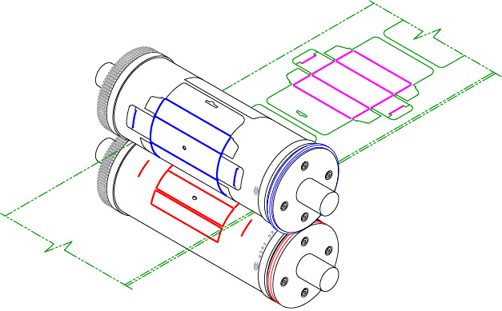

En Wilson, siempre estamos enfocados en los aspectos técnicos de flexografía. Charla técnica es su vistazo rápido a los temas claves de nuestra industria. Déjenos saber que piensa.
Volver a Recursos
La caja plegadiza: ¿Es para usted esta novedad emergente?
La caja plegadiza está creciendo en popularidad en toda la industria. Antes de decidir si usted debe seguir esta moda, he aquí unas preguntas que usted puede querer considerar.
¿Tengo la prensa correcta?
La mayoría de las prensas se clasifican para un rango de espesores de material. Ya que la mayoría de las prensas son diseñadas para hacer etiquetas, el rango típicamente es entre .010 cm (.004”) y 0.25 cm (.010”) de espesor. Cualquier material con más espesor de lo que su prensa es capaz de manejar puede causar problemas de paso y de registro.
¿Tengo un rodillo yunque removible en la estación hojeadora?
Esto le permite hacer la conversión de un solo paso, con las navajas plegadizas macho y las navajas de corte encima mientras las navajas plegadizas hembra corren en la estación del yunque. Si no tiene un yunque removible en la estación hojeadora, tendrá que correr un juego machohembra primero, y luego hacer el corte del perímetro.

¿Cómo se doblará la caja?
Contestar esta pregunta es crítico cuando uno está considerando el pliegue. Para plegados hechos por la máquina, si la caja es de cartón o papel, se tiene que usar un pliegue machohembra. En general, todos materiales de plástico que necesitan doblarse deben incluir un pliegue de corte (es decir que la navaja corta 50% del espesor total del material) o un pliegue dentado. Los pliegues machohembra y los pliegues aplastantes no funcionan en materiales de plástico porque estos materiales tienen demasiada memoria.
¿Como se debe situar el perímetro en la herramienta?
Si se puede sesgar la figura un poco (es decir, que las navajas horizontales no corran a exactamente 90 grados del embobinado) esto le permitirá usar menos fuerza en la herramienta y, por lo tanto, le dará más vida a la herramienta. El problema con esto es que puede causar dificultades con la entrega al final de la prensa. Si desea apilar las cajas con un apilador, sesgar la figura en la herramienta puede causar que el apilador no funcione correctamente.
¿Preguntas sobre el acero?
Si tiene preguntas adicionales o pensamientos acerca de cómo la fuerza afecta su aplicación, le invitamos a contactar el equipo técnico de Wilson. Haga clic aquí para contactar a Wilson.